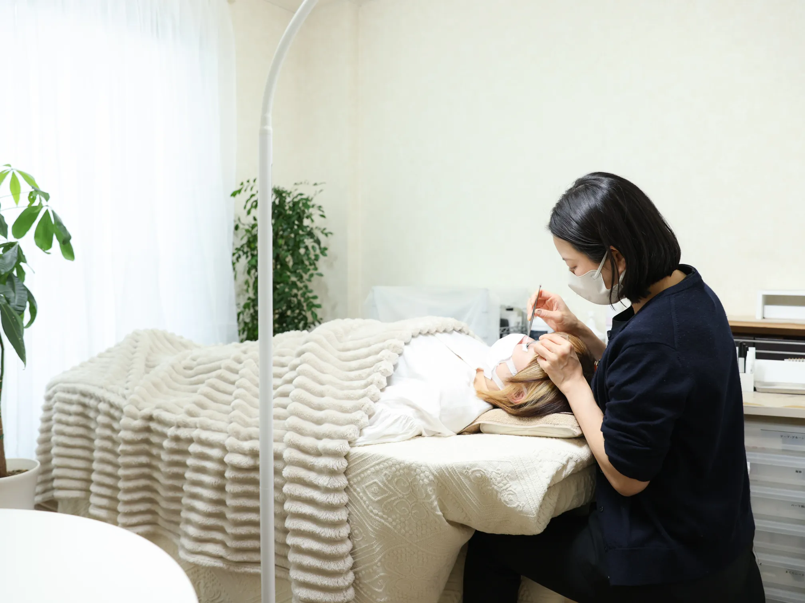
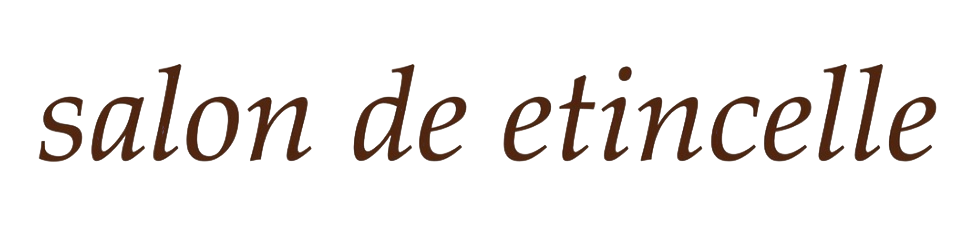
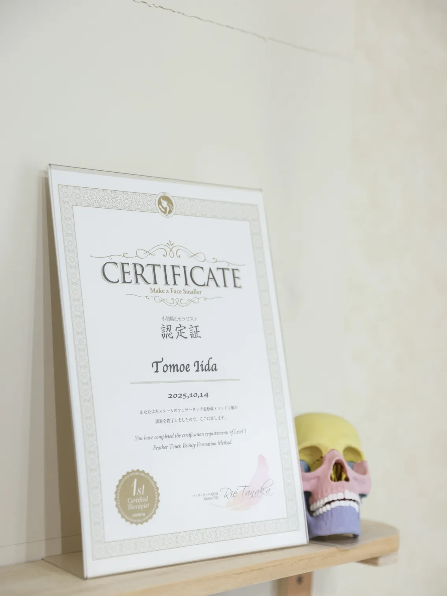
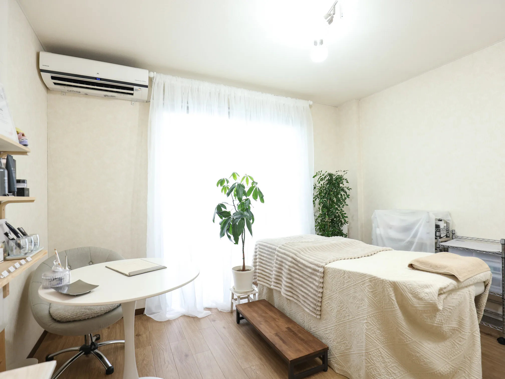

安曇野の大人女性向け小顔矯正
アイラッシュ専門店


Greeting
年齢と共に変化する輪郭のぼやけや目元の印象に、 手技だけでアプローチする安曇野市の小顔矯正専門サロンです。 最新の市場データでも、40代以降の女性の約7割が顔のたるみに悩んでいる一方、 多くのサロンが高額な機器や一時的なケアに終始しています。当サロンでは、 高度な骨格技術により本来の美しさを引き出し、地域のお客様の深いお悩みを根本から救済します。
Our Strengths

当サロンは、全国でわずか20名、長野県内では1名しか存在しない「フェザータッチ美形成メソッド1級」 の正規認定サロンです。最新の美容市場でも、お顔への強いマッサージは摩擦や負担となりやすいことが知られています。 思わず眠ってしまうほどの繊細な手技で骨格のバランスを優しく整え、あなた本来のみずみずしい美しさを冷徹に、かつ丁寧に引き出します。
Atmosphere
1人でゆったりと貸し切れる完全個室の施術ルーム。 だれにも邪魔されないプライベートな空間で、忙しい毎日の緊張をそっと解きほぐします。 ふかふかのベッドと温かみのあるお部屋で、髪もメイクも気にせず、どうぞ「素のあなたのまま」でおくつろぎください。

dairy care
question
A.ベストシーズンは乾季にあたる5月〜9月です。特に6月と9月は、輝くアドリア海と穏やかな気候を同時に楽しめます。真夏は30度を超えますが、日本のような湿気がなくカラッとしていて、木陰に入れば心地よい風が吹き抜けます。
A.基本的には必須ではありませんが、快いサービスを受けた際に心付けを渡す文化はあります。レストランでは料金の10%程度、カフェならお釣りの小銭を残す程度で十分です。相手への敬意を「潔く」形にする、そんなスマートな心遣いが喜ばれます。
A.クロアチアの水道水は非常に質が高く、そのまま飲むことができます。特に山岳地帯からの湧き水は清らかで、街中の水飲み場の水も安全です。観光中にペットボトルを買い足す必要がなく、環境にも優しい「潔い旅」が楽しめます。
blog